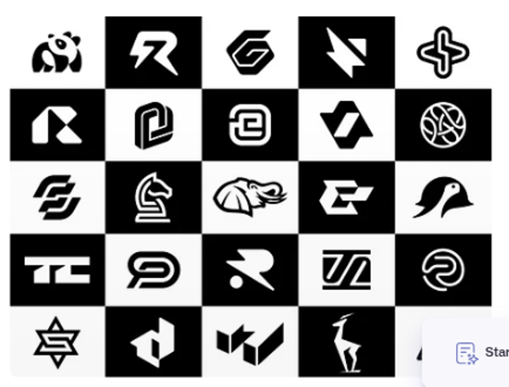

Three attempts in the reference's language: one material, one cut, test inverted.

A ribbon bent into an open jaw. Upper jaw longer, lower jaw shorter, one blue blip caught in the bite. Reads as “catch”.
The literal U: right arm folds into a snout, the fold’s inner corner cut into a slot. The U stays a U.
One closed silhouette with a single blue mouth slot. Closest to the penguin/elephant logic, but literal.